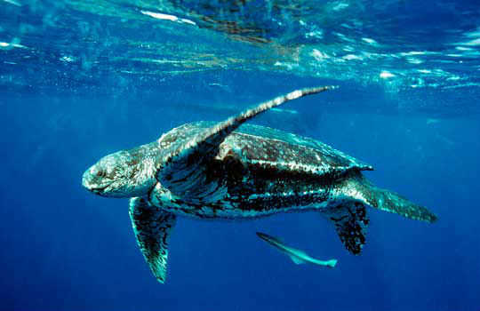
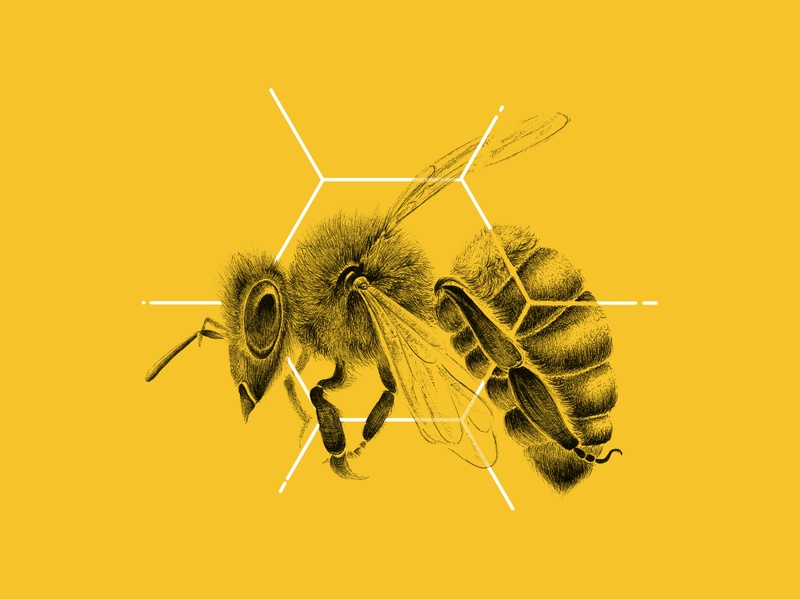
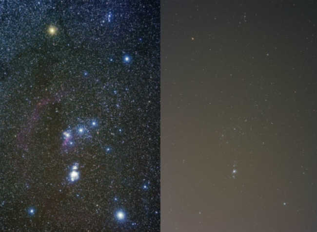
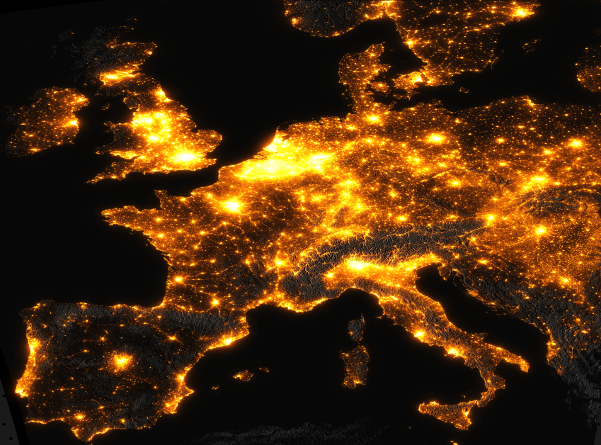

A poluição luminosa causa diversos impactos para os seres vivos, afetando os ciclos migratórios, alimentares e reprodutivos de diversas espécies de animais e plantas. A aranha orb weaver, por exemplo, utiliza a atração que as luzes artificiais exercem em insetos para capturá-los, construindo sua teia próximas às fontes artificiais de luz e destruindo o balanço de um ecossistema inteiro.
Outro impacto é a influência negativa em rotas migratórias de aves - várias espécies migrantes noturnas têm seus mecanismos de orientação interferidos e se desorientam ao atravessarem áreas muito iluminadas. Essa interferência leva esses pássaros a se chocarem com prédios, montanhas, solo ou até mesmo uns com os outros. Em 1954, aproximadamente 50 mil aves morreram após seguirem um farol da força área americana e voarem diretamente para o solo. Algumas aves acreditam que a primavera chegou mais cedo e começam a se reproduzir prematuramente ou até mesmo a migrar antes da época correta por causa da grande iluminação.
As tartarugas-de-couro fazem seus ninhos na praia e, quando os filhotes nascem, eles são instintivamente guiados pelo reflexo da luz das estrelas e da lua para seguirem em direção ao mar. Porém, ao invés de irem ao encontro dos oceanos, eles seguem as luzes dos hotéis e das ruas em direção ao continente e acabam morrendo de desidratação, devorados por algum predador ou até mesmo atropelados por carros.
Animais com bioluminescência - que é a produção e emissão de luz por um organismo vivo e que tem diversas funções (camuflagem, comunicação e atração de presas e parceiros para reprodução) - também são afetados. Em áreas intensamente iluminadas, esse fenômeno perde sua função. Por esse motivo, em diversas regiões do mundo, os vaga-lumes são cada vez mais escassos. As fêmeas dos vaga-lumes utilizam a bioluminescência para atrair os machos em até 45 metros de distância, mas, com a presença de luz artificial, essa ferramenta é prejudicada, reduzindo a reprodução da espécie.
Algumas espécies de plantas não florescem se a duração da noite é mais curta, enquanto outras florescem prematuramente. A fotossíntese induzida pela luz artificial pode produzir um crescimento anormal e uma defasagem nos períodos de floração e descanso das plantas. Termo também conhecido como Fotoperiodismo.
Outros impactos para o meio ambiente são a desorientação das abelhas, o aumento da vulnerabilidade dos zooplânctons para os peixes, a invasão de espécies nas cidades, como as mariposas gigantes na Ásia, e a exposição de animais noturnos a predadores, limitando seu tempo de alimentação e reprodução.
Fora os impactos citados, nós humanos também sofremos com essa exposição intensa à luz, afinal, nós também somos animais. O excesso de luz exterior invade nossas casas e perturba nosso sono. Além disso, a iluminação atrai alguns insetos que podem ser portadores de doenças.
A luz noturna provoca mudanças no sono e confunde o ritmo circadiano, que é o período de aproximadamente 24 horas sobre o qual se baseia o ciclo biológico de praticamente todos os seres vivos. Esse ritmo influencia os nossos padrões de sono, temperatura e produção de hormônios. Essa confusão tem sido relacionada com distúrbios de sono, depressão, obesidade e transtornos de humor.
Estudos recentes também sugerem que a exposição prolongada à luz artificial pode aumentar o risco de desenvolver certos tipos de câncer, como o de mama e outros relacionados aos hormônios. Pesquisas indicaram que mulheres que trabalham durante a noite têm maiores chances de desenvolver câncer de mama e, em 2007, a Agência Internacional para Pesquisa em Câncer (IARC, na sigla em inglês) considerou trabalho noturno como um “provável cancerígeno humano”.
A visualização da nossa galáxia a olho nu também é afetada pela poluição luminosa e, hoje em dia, quem nasceu e viveu nas grandes cidades não tem contato com o universo. O excesso de iluminação desperdiçada em direção ao céu ofusca nossa visão e faz com que a imagem perca qualidade, de modo que apenas as estrelas mais cintilantes são visíveis. Veja na figura abaixo a constelação de Orion vista em áreas urbanas (direita) e em áreas livres de poluição luminosa (esquerda)
Astrônomos amadores sofrem muito com esse impacto, sendo necessário que se dirigirem para zonas mais afastadas das cidades, em locais pouco iluminados e mais altos. Essa iluminação também interfere nos equipamentos dos astrônomos, como o espectrográfico, que são instrumentos que medem como a luz emitida por um objeto se dispersa em cores diferentes. Com essa medição é possível definir a massa, composição química, temperatura e luminosidade de um corpo no espaço, porém, a poluição luminosa interfere nas medições.
Adicionalmente, alguns elementos utilizados nas lâmpadas para se manterem acesas são altamente poluentes e podem causar grandes impactos ambientais quando descartados. Entre esses elementos estão o mercúrio, chumbo, cádmio, estrôncio e bário.
Isso sem contar que a poluição luminosa é um grande desperdício de energia e dinheiro. Aproximadamente um quarto de todo o gasto de energia é direcionado para geração de luz. Um pesquisa realizada na Áustria em 2008 descobriu que cerca de 30-50% da contribuição do governo para o efeito estufa se devia à iluminação pública, da qual aproximadamente 30% é desperdiçada iluminando o céu. As consequências desse desperdício são inúmeras, pois grande parte dessa energia consumida é originada de fontes poluidoras como termoelétricas, que consomem recursos naturais e liberam poluentes como o dióxido de carbono para atmosfera, além de ser um peso no orçamento.
